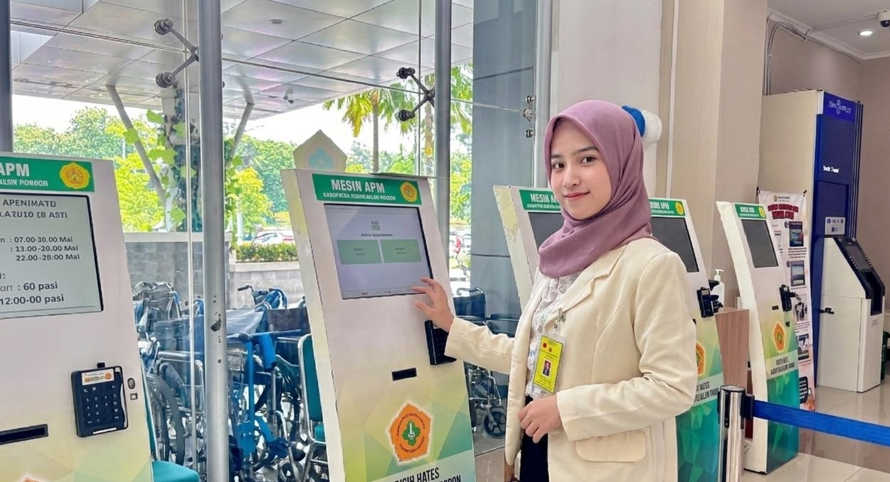

FEB – MAR 2026
RSUD Wates
Praktik Rekam Medis · Fokus APM
- Mendukung alur pendaftaran rawat jalan melalui Anjungan Pendaftaran Mandiri (APM) dan mendampingi pasien.
- Melakukan edukasi penggunaan APM, verifikasi data, pemeriksaan administrasi, dan pencetakan bukti pendaftaran.
- Mempelajari monitoring penggunaan APM dan identifikasi kendala pelayanan melalui SIMRS.
